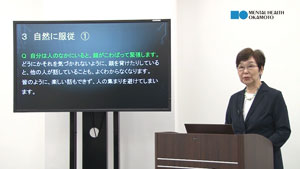
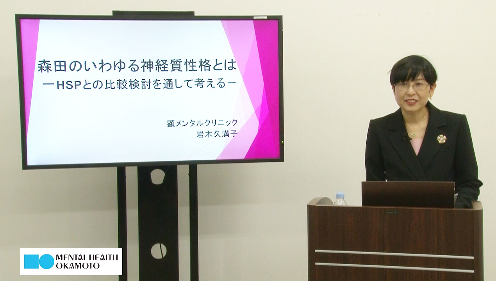
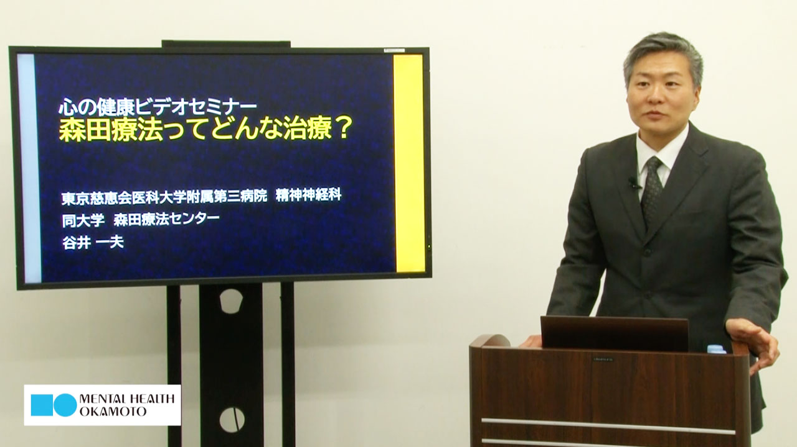
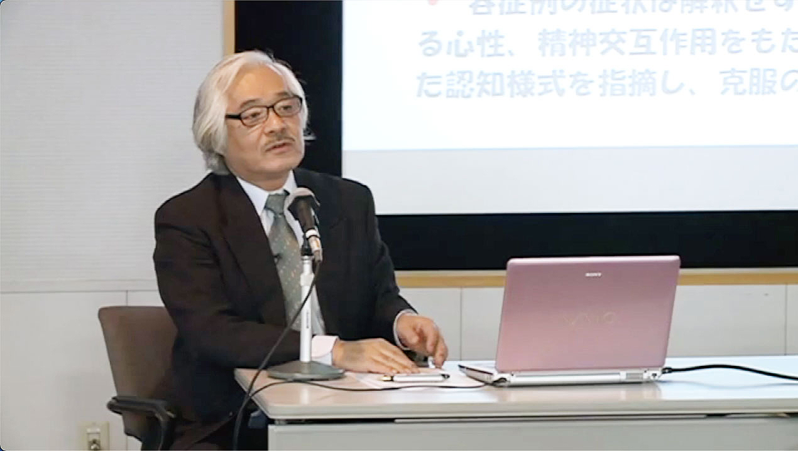
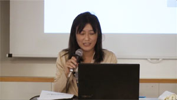
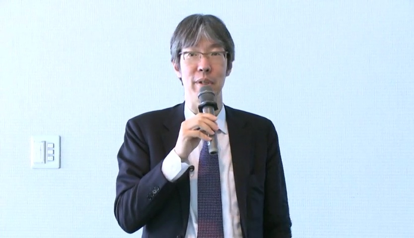

心の健康ビデオセミナー（YouTube公式チャンネル）
このビデオは、当財団がYouTube公式チャンネルで定期的に配信している心の健康ビデオセミナー講演風景を視聴できる動画です。毎回講師の先生をお招きして、神経症や不安障害についての講演を配信しています。

「森田療法の世界」
（岩田真理先生）
気分本位や自然服従など、森田療法を実践していく上で悩みや質問なども多い部分をQ＆A形式を交えて分かりやすく解説します。

「HSPと神経質者の治療例と比較」
（岩木久満子先生）
近年話題のHSP（ハイリー・センシティブ・パーソン）と神経質者の特徴と違いを、共に40代うつ病男女の治療例を通じて解説します。

「森田療法ってどんな治療？」
（谷井一夫先生）
森田療法の適応となる症状や、とらわれの機制、不安の捉え方について説明し、森田療法の治療で目指すものについて、不眠症、不眠恐怖の症例を交えて解説しています。
「森田療法の基本的考え方と回復の援助」
（北西憲二先生）
森田療法の基本的な考え方と対人不安と慢性抑うつ症状の2事例を紹介しながら、外来森田療法の治療プロセスや薬物療法の役割を解説します。

うつ病の森田療法と集団精神療法〜浜松医大の分かりやすい森田療法〜
（星野良一先生）
うつ病への森田療法の考え方と治療法及び浜松医大の集団精神療法の考え方や内容を解説します。

初老期・老年期の不安、うつと森田療法
（塩路理恵子先生）
初老期、老年期が抱えるを身体的、認知的問題への対応が重要な時代に、森田療法的アプローチについて解説します。

森田療法は我々に何を教えてくれるのか
（樋之口潤一郎先生）
森田療法の特徴と治療の進め方について、どのようなポイントがあるか、そして患者はどのような考え方や行動を求められるかのを解説します。

森田療法の逆説：不安の時代を生きる知恵
（新村秀人先生）
森田療法のうつ病に対する養生論的な考え方や治療法、又コントロール出来る事とできない事を分ける重要性を解説します。